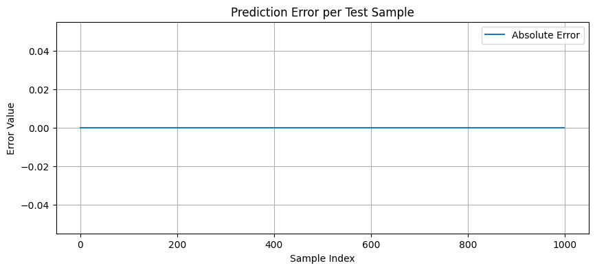

import torch
from torch.utils.data import Dataset, DataLoader
import numpy as np
import random
# 設定隨機種子以保證可重現性
SEED = 822
np.random.seed(SEED)
torch.manual_seed(SEED)
random.seed(SEED)
def requires_borrow(a, b):
"""檢查 a - b 是否會需要退位（borrow）"""
a_str = str(a)[::-1] # 反轉為從低位開始
b_str = str(b)[::-1]
for i in range(len(b_str)):
a_digit = int(a_str[i]) if i < len(a_str) else 0
b_digit = int(b_str[i])
if a_digit < b_digit:
return True
return False
largest_number = 255
binary_dim = 8 # 每個數字最多 8 bits
int2binary = {}
binary = np.unpackbits(
np.array([range(2**binary_dim)], dtype=np.uint8).T, axis=1
)
for i in range(2**binary_dim):
int2binary[i] = binary[i]
data = []
while len(data) < 10000:
a_int = np.random.randint(2, largest_number) # 最大為 254
b_int = np.random.randint(1, a_int) # b < a，且最小是 1
if not requires_borrow(a_int, b_int):
continue
a = int2binary[a_int]
b = int2binary[b_int]
c_int = a_int - b_int
c = int2binary[c_int]
data.append((a, b, c))
class BinarySubtractionDataset(Dataset):
def __init__(self, data):
self.samples = []
for a, b, c in data:
x = np.array(list(zip(a[::-1], b[::-1])), dtype=np.float32) # time_steps x input_dim
y = c[::-1].astype(np.float32) # 目標也反轉（低位在前）
self.samples.append((x, y))
def __len__(self):
return len(self.samples)
def __getitem__(self, idx):
x, y = self.samples[idx]
return torch.tensor(x), torch.tensor(y)
# 建立資料集
dataset = BinarySubtractionDataset(data)
train_size = int(0.9 * len(dataset))
test_size = len(dataset) - train_size
train_set, test_set = torch.utils.data.random_split(dataset, [train_size, test_size])
train_loader = DataLoader(train_set, batch_size=128, shuffle=True)
test_loader = DataLoader(test_set, batch_size=128)LSTM（Long Short-Term Memory）模型是 RNN 的延伸，主要目的在於改善 RNN 梯度爆炸以及長期依賴的問題。
具體來說，一般結構簡單的 RNN 使用的激勵函數為 Sigomid、tah，在沒有記憶性質的 NN 裡最多也只能疊6層 layers，否則在反向傳遞誤差時，誤差會隨著層數增加而減少，無法有效更新權重，有記憶性質的 RNN 在反向傳遞的誤差還會受到序列(例如從 \(t+1\) 到 \(t\))的影響，因此 一般 RNN 無法學習太長的 series data。
要改善 RNN 的問題，一般會朝兩個方向改進：使用更複雜的模型結構，或是與其他模型結合組成混合式深度學習。
LSTM 就是採前者的作法，使得他可以學習長期 series data，代價是，他的結構複雜，執行速度也拖慢很多。一個 ep
主要內容引用自 「李金洪. 2022. 全格局使用 PyTorch - 深度學習和圖神經網路 - 基礎篇. 深智數位」第 7.5 節。
LSTM 的模型結構
懶得畫，直接找別人ㄉ

與一般 RNN 相比， LSTM 主要增加了 3 個東西
- 遺忘門
- 輸入門
- 輸出門
遺忘門
遺忘門的作用是決定甚麼時候需要把以前的狀態忘記。LSTM 的遺忘門主要由三部分組成：
輸入（\(x_t\)）：當前時刻的輸入。
隱藏狀態（\(h_t\) − \(h_{t−1}\)）：前一時間步的隱藏狀態。
遺忘門的激勵函數：決定了多少先前的記憶被丟棄。
所以寫成數學式為：
\(f_t = \sigma ( W_f \cdot [h_{t-1}, x_t] + b_f )\)
其中：
\(f_t\)：遺忘門的輸出結果
\(\sigma\)：激勵函數
\(b_f\)：遺忘門的 bais
輸入門
輸入門有兩個功能，一個是找到需要更新的細胞狀態，另一個是把需要更新的資訊更新到細胞狀態裡。具體而言數學式為：
\(i_t = \sigma (W_i \cdot [h_{t-1},x_t] + b_i)\)
\(\hat C_t = \tanh (W_C \cdot [h_{t-1},x_t] + b_C)\)
其中：
\(i_t\)︰要更新的細胞狀態
\(h_{t-1}\)︰前一個時間點的模型輸出
\(W_i\)：計算 \(i_t\) 的權重
\(W_C\)：計算 \(\hat C_t\) 的權重
\(b_i\)：計算 \(\hat C_t\)
當遺忘門找到需要忘記的資訊\(f_t\)時，會將其與舊的狀態相乘，然後再與輸入門產生的 \(i_t \times \hat C_{t-1}\)相加，使細胞獲得新的資訊，完成細胞狀態的更新，數學式為：
\(C_t = f_t \times C_{t-1} + i_t \times \hat C_t\)
輸出門
輸出門會透過一個啟動函數層來確定哪部份的資訊要被輸出，接著決定模型在特定時間點 \(t\) 的數學結果，具體數學式如下：
\(o_t = \sigma (W_o \cdot [h_{t-1},x_t] + b_o)\)
\(h_t = o_t \times (C_t)\)
實作：退位減法
為了跟前面的手刻 RNN 比較，再拿退位減法當例子雖然很大才小用。再複述一次退位減法的語法結構：
\[a - b = c\]
其中 a、b、c都是整數，且\(a>b\)，我們的目標是a、b已知的前提下，印出來的c要是正確的，先來生成資料(a、b、c)。
資料生成大致與上次相同，不同的是多了將資料轉成可供 pytorch 的 DataLoader 格式，並且區分訓練集跟驗證集：
然後來製作模型
模型定義
LSTM 模型的結構雖然複雜，但在 pytorch 裡的語法結構與普通的 NN 差不多。只是本次的課題要處理減法算出的數字的二進位版本，輸出會是由 0 與 1 組成的序列，比較特殊，因此模型結構也以此設計。先來看看一般 LSTM 模型的架構在pythorch中是什麼樣子，以下是一個是個通用範例：
import torch
import torch.nn as nn
class LSTMModel(nn.Module):
def __init__(self, input_size=1, hidden_size=128, output_size=1):
super(LSTMModel, self).__init__()
self.hidden_size = hidden_size
self.lstm = nn.LSTM(input_size, hidden_size, batch_first=True)
self.fc = nn.Linear(hidden_size, output_size)
def forward(self, x):
out, _ = self.lstm(x) # [batch, seq_len, hidden_size]
out = self.fc(out) # [batch, seq_len, output_size]
return out可以看到與之前看到的 NN 模型類似，都需要用一個 class 包覆，也需要設定 input、output、hidden數，以及正向傳遞。
由於本次課題的特殊性，本次使用的模型多了一個 self.sigmoid = nn.Sigmoid()，這是為了跟後續 loss function 的設定 BCELoss()配合。模型設定如下：
import torch.nn as nn
class LSTMSubtractor(nn.Module):
def __init__(self, input_size=2, hidden_size=32, output_size=1):
super(LSTMSubtractor, self).__init__()
self.lstm = nn.LSTM(input_size, hidden_size, batch_first=True)
self.fc = nn.Linear(hidden_size, output_size)
self.sigmoid = nn.Sigmoid()
def forward(self, x):
lstm_out, _ = self.lstm(x) # output: (batch, seq_len, hidden)
out = self.fc(lstm_out) # (batch, seq_len, 1)
return self.sigmoid(out) # predict bit 0 or 1參數設定與模型訓練
參數設定如下：
接著來設定參數：
device = torch.device("cuda" if torch.cuda.is_available() else "cpu")
model = LSTMSubtractor().to(device)
criterion = nn.BCELoss()
optimizer = torch.optim.Adam(model.parameters(), lr=0.01)
EPOCHS = 100這裡要解釋 nn.BCELoss() 是什麼東西，根據 pytorch 官方文件 ，它的數學式為：
for all sample size \(n\)
\[ \ell_n = - w_n \left[ y_n \cdot \log(x_n) + (1 - y_n) \cdot \log(1 - x_n) \right] \]
- \(x_n\)：模型輸出機率（預測值），需介於 0 與 1 之間
- \(y_n\)：真實值（0 或 1）
- \(w_n\)：逐樣本權重（若未指定權重則預設為 1）
然後 \(\ell_n\) 可以組成向量 \(L = (l_1, \dots , l_n)^T\)，接著按照裡面的設定不同，輸出也會不同：
\[\ell(x, y) = \begin{cases} \text{mean}(L), & \text{if reduction='mean'} \\ \text{sum}(L), & \text{if reduction='sum'} \end{cases}\]
整批次資料的損失根據 reduction 的設定方式不同，被輸出為一個 scalar：
'mean'（預設）：\[ \text{loss} = \frac{1}{N} \sum_{n=1}^{N} \ell_n \]
'sum'：\[ \text{loss} = \sum_{n=1}^{N} \ell_n \]
'none'： 保持逐元素損失，不做處理，輸出與輸入相同
由於 \(x_n = 0\) 或 \(x_n = 1\) 時會導致 \(\log(0)\) 出現負無限大，PyTorch 在實作中將 log 的最小值限制為 \(-100\)，避免出現無限大或梯度爆炸的情況，確保訓練穩定。
接著，我們將 epoch (模型掃過資料的次數)設為 100，對訓練集訓練：
for epoch in range(EPOCHS):
model.train()
total_loss = 0
for x_batch, y_batch in train_loader:
x_batch = x_batch.to(device)
y_batch = y_batch.to(device).unsqueeze(-1) # (batch, 8, 1)
optimizer.zero_grad()
output = model(x_batch)
loss = criterion(output, y_batch)
loss.backward()
optimizer.step()
total_loss += loss.item()
print(f"Epoch {epoch+1}/{EPOCHS}, Loss: {total_loss:.4f}", end='\r')Epoch 100/100, Loss: 0.0002定義預測函數、進行預測後，再來查看在測試集的效果：
def binary2int(binary_array):
"""將二進位 ndarray 轉換為十進位整數"""
return int("".join(str(int(b)) for b in binary_array), 2)
def predict(model, a_int, b_int):
model.eval()
a = int2binary[a_int]
b = int2binary[b_int]
x = np.array(list(zip(a[::-1], b[::-1])), dtype=np.float32)
x_tensor = torch.tensor(x).unsqueeze(0).to(device) # (1, 8, 2)
with torch.no_grad():
pred = model(x_tensor).squeeze().cpu().numpy()
pred_bits = np.round(pred).astype(int)[::-1] # 反轉回原本順序
pred_val = sum([bit * (2 ** i) for i, bit in enumerate(pred_bits[::-1])])
return pred_val, pred_bits結果
def bits_to_int(bit_tensor):
"""將 bit tensor 轉為十進位整數（從低位開始）"""
bits = bit_tensor.int().numpy().tolist()
return int("".join(str(b) for b in bits[::-1]), 2) # 注意反轉
Error_list = []
for j in range(len(test_set)):
# 讀一筆
x, y = test_set[j]
# 拆開 a 和 b 的 bits（注意 shape 是 [seq_len, 2]）
a_bits = x[:, 0]
b_bits = x[:, 1]
c_bits = y
# 還原整數
a_int = bits_to_int(a_bits)
b_int = bits_to_int(b_bits)
c_int = bits_to_int(c_bits)
d = predict(model, a_int, b_int)
# 紀錄誤差
error = np.abs(c_int - d[0])
Error_list.append(error)
# 取其中的五筆觀察
if j % 200 == 0:
# 顯示
print(f"True value: {c_int} ; {c}")
print(f"Predicted value: {d[0]} ; {d[1]}")
print(f"Predicted formula: {a_int} - {b_int} = {d[0]}")
print("---------------")True value: 62 ; [0 0 0 0 1 1 1 1]
Predicted value: 62 ; [0 0 1 1 1 1 1 0]
Predicted formula: 123 - 61 = 62
---------------
True value: 24 ; [0 0 0 0 1 1 1 1]
Predicted value: 24 ; [0 0 0 1 1 0 0 0]
Predicted formula: 118 - 94 = 24
---------------
True value: 116 ; [0 0 0 0 1 1 1 1]
Predicted value: 116 ; [0 1 1 1 0 1 0 0]
Predicted formula: 250 - 134 = 116
---------------
True value: 137 ; [0 0 0 0 1 1 1 1]
Predicted value: 137 ; [1 0 0 0 1 0 0 1]
Predicted formula: 204 - 67 = 137
---------------
True value: 185 ; [0 0 0 0 1 1 1 1]
Predicted value: 185 ; [1 0 1 1 1 0 0 1]
Predicted formula: 245 - 60 = 185
---------------把誤差化成圖：
import matplotlib.pyplot as plt
plt.figure(figsize=(10, 4))
plt.plot( Error_list, label="Absolute Error")
plt.xlabel("Sample Index")
plt.ylabel("Error Value")
plt.title("Prediction Error per Test Sample")
plt.grid(True)
plt.legend()
plt.show()
在測試集的表現非常好，順便來介紹 & 計算常用模型評估指標，RMSE。RMSE（Root Mean Squared Error）為 MSE 的平方根，是常用的模型誤差評估指標。
\[ \text{RMSE} = \sqrt{ \frac{1}{n} \sum_{i=1}^{n} (\hat{y}_i - y_i)^2 } = \sqrt{\text{MSE}} \]
import numpy as np
true_vals = []
pred_vals = []
for x, y in test_set:
# 還原 a、b 的 bit 並轉為十進位
a_int = bits_to_int(x[:, 0])
b_int = bits_to_int(x[:, 1])
true_val = bits_to_int(y)
pred_val, _ = predict(model, a_int, b_int)
true_vals.append(true_val)
pred_vals.append(pred_val)
# 轉為 numpy 陣列
true_vals = np.array(true_vals)
pred_vals = np.array(pred_vals)
errors = np.abs(true_vals - pred_vals)
# 計算 RMSE
rmse = np.sqrt(np.mean((true_vals - pred_vals) ** 2))
print(f"RMSE: {rmse:.4f}")RMSE: 0.0000import matplotlib.pyplot as plt
plt.figure(figsize=(10, 4))
x = [ x for x in range(501, 1001)]
plt.plot( errors, label="Absolute Error")
plt.xlabel("Sample Index")
plt.ylabel("Error Value")
plt.title("Prediction Error per Test Sample")
plt.grid(True)
plt.legend()
plt.show()
這裡因為誤差是 0 RMSE 想當然爾也是0囉。
補充：GRU 模型
GRU 模型與 LSTM 功能幾乎一樣，差異在GRU將遺忘門和輸入門簡化為單一一個門，同時將細胞狀態和隱藏狀態結合為一個狀態，大幅簡化原先 LSTM 模型的設計。
GRU 延伸閱讀
No matching items